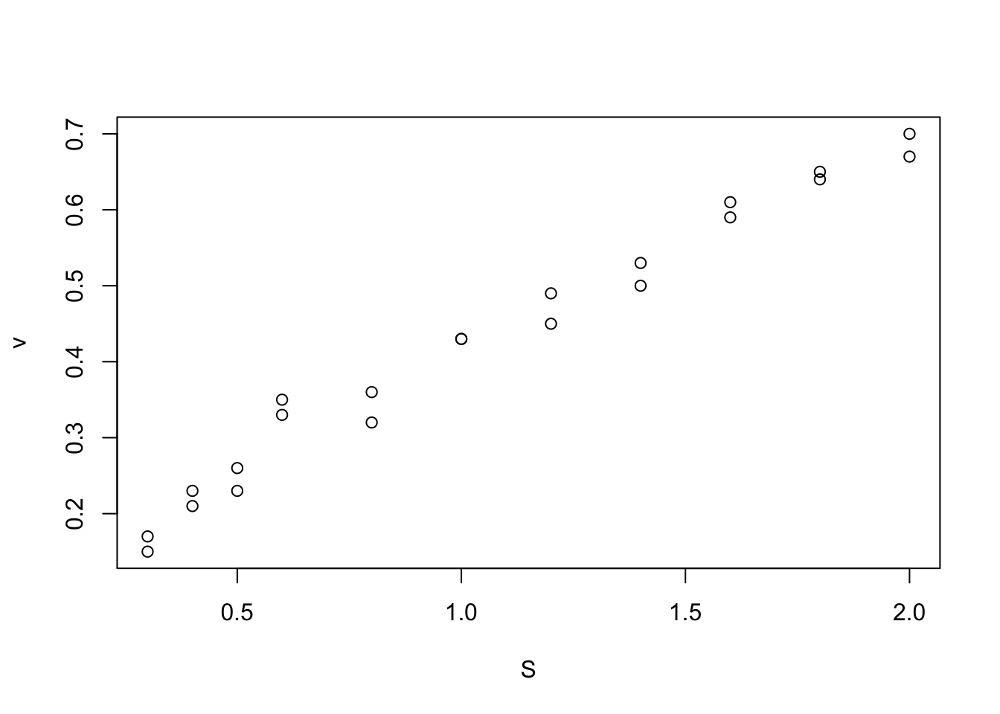
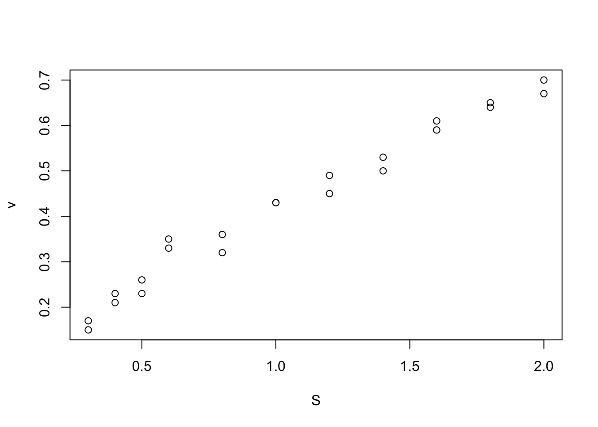
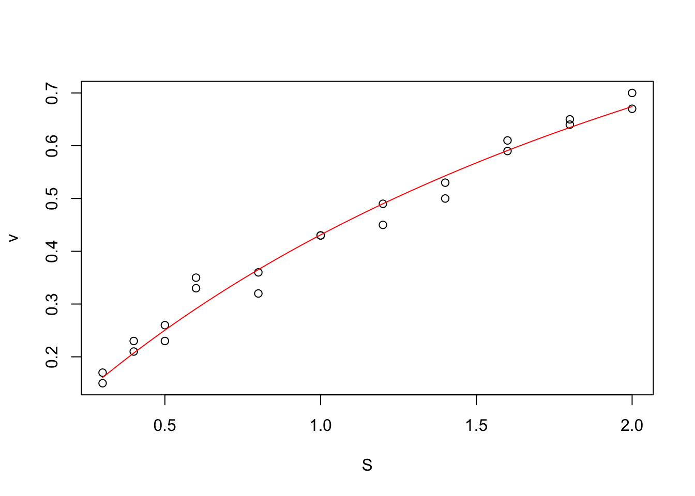
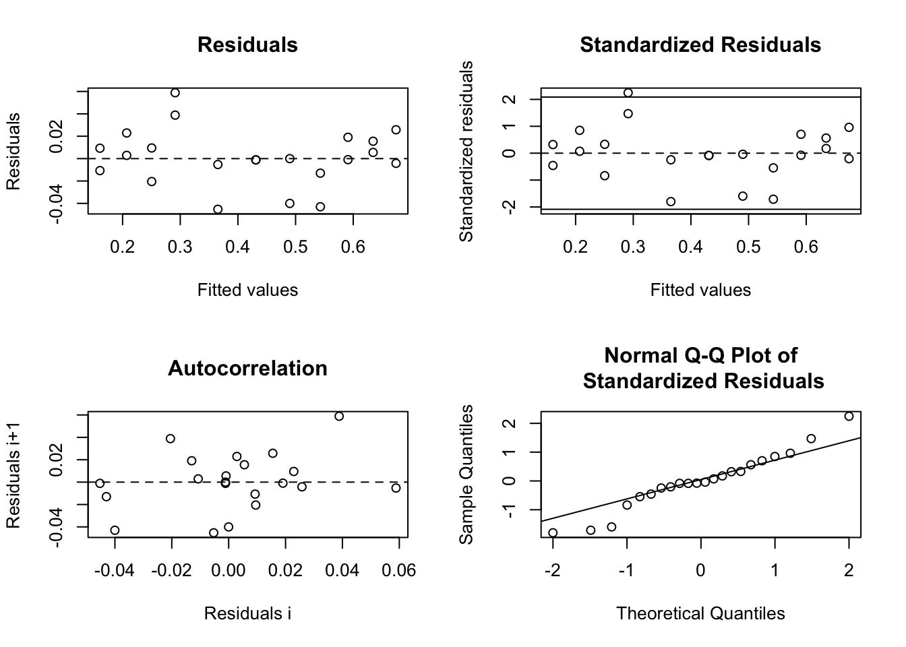
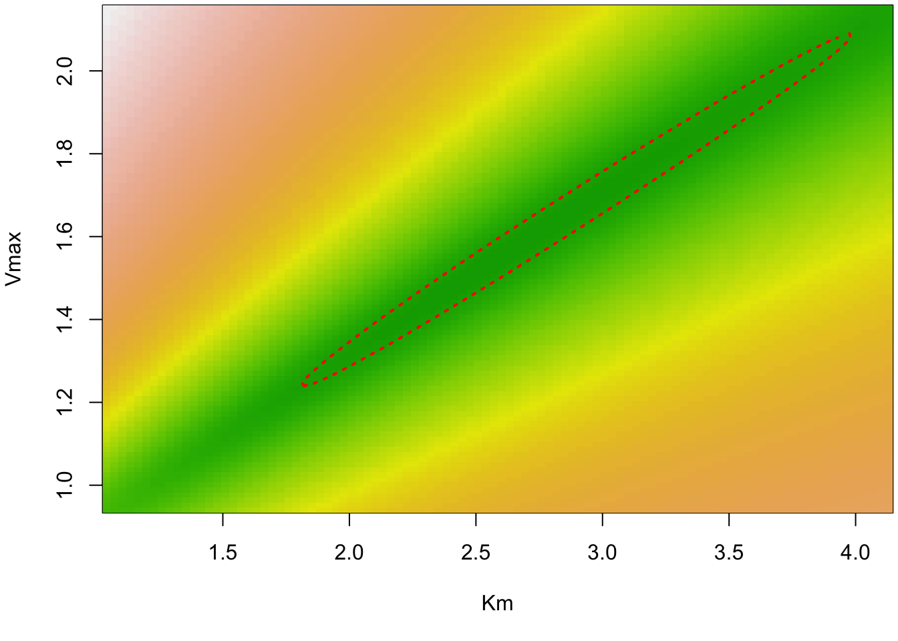
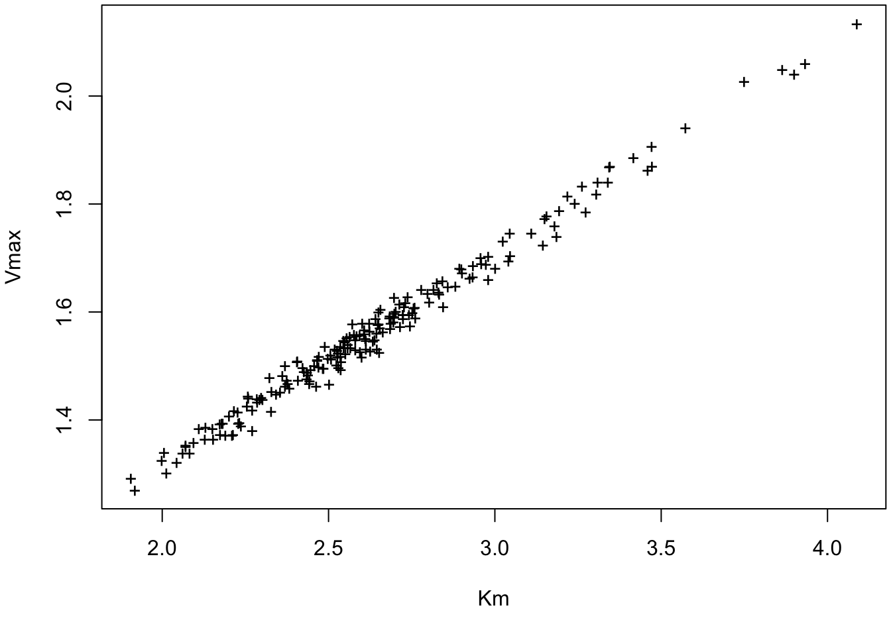

library(nlstools)
data(vmkm)
plot(vmkm)
The most important thing first: the distinction between a linear and a nonlinear regression is NOT if you fit a linear function. Quadratic, cubic and other polynomial functional forms are all linear regressions. A regression is called a “linear regression” if the function of the mean can be represented as a polynmial of the form
\[ y ~ a_0 + a_1 \cdot x + a_2 \cdot x^2 + ...\]
If your model can be expressed in this way by transforming y or x (e.g. log(y), logit(y)) it is always preferable because fitting linear regressions is numerically easier and more stable, and consequently, there is much more support for linear regressions in R.
However, there are a number of functions that cannot be expressed as a linear regression. Typical examples in ecology are growth or density dependence models, or in biology certain reaction or dose-response curves. In these an other case, you will have to run a nonlinear regression. The simplest case is a nonlinear regression with a normal residuals, which is known as nls(nonlinear least squares).
Here, I will use the Michaelis-Menten model as an example. In this example, we are interested in the development of a reaction rate over time. The data we have are measurements of the reaction rate and substrate concentration
library(nlstools)
data(vmkm)
plot(vmkm)
From the MM model, we can derive the evolution of the reaction rate (v) as a function of the concentration of substrate (S) (For details, see ?nlstoools::michaelismodels ). The function we want to fit is of the form:
\[ v = \frac{S}{S + K_m} \cdot V_{max}\]
The base package to do this is the nls package, which allows you to specify
mm <- nls(v ~ S/(S + Km) * Vmax,data = vmkm,
start = list(Km=1,Vmax=1)) Alternatively, the helpful nlstools package already provides many functions that you may want to fit, including this particular function under the name ‘michaelis’. We have already loaded this package, so you could can just write
mm <- nls(michaelis,data = vmkm, start = list(Km=1,Vmax=1)) Note that in unlike in a lm, the nls function requires you to provide starting values for the parameters. This helps the optimizer to find the MLE for the model, which can sometimes be problematic. In this case, you may also want to consider changing the algorithm and some of its settings (via algorithm and control, see ?nls).
The model provides a standard summary table.
summary(mm)
Formula: v ~ S/(S + Km) * Vmax
Parameters:
Estimate Std. Error t value Pr(>|t|)
Km 2.5861 0.3704 6.981 8.94e-07 ***
Vmax 1.5460 0.1454 10.635 1.11e-09 ***
---
Signif. codes: 0 '***' 0.001 '**' 0.01 '*' 0.05 '.' 0.1 ' ' 1
Residual standard error: 0.02572 on 20 degrees of freedom
Number of iterations to convergence: 6
Achieved convergence tolerance: 2.51e-06The nlstools package has a bit extended summary table that provides a few useful additional information
overview(mm)
------
Formula: v ~ S/(S + Km) * Vmax
Parameters:
Estimate Std. Error t value Pr(>|t|)
Km 2.5861 0.3704 6.981 8.94e-07 ***
Vmax 1.5460 0.1454 10.635 1.11e-09 ***
---
Signif. codes: 0 '***' 0.001 '**' 0.01 '*' 0.05 '.' 0.1 ' ' 1
Residual standard error: 0.02572 on 20 degrees of freedom
Number of iterations to convergence: 6
Achieved convergence tolerance: 2.51e-06
------
Residual sum of squares: 0.0132
------
t-based confidence interval:
2.5% 97.5%
Km 1.813418 3.358860
Vmax 1.242790 1.849303
------
Correlation matrix:
Km Vmax
Km 1.0000000 0.9917486
Vmax 0.9917486 1.0000000A plot can be generated with
nlstools::plotfit(mm, smooth = TRUE)
Residual plots can be created using the nlstools package
res <- nlsResiduals(mm)
plot(res, which = 0)
Of course, all discussions about residuals from the chapter on linear regressions also applies here, so we are checking for iid normal residuals.
In nonlinear models, the MLE curvature will often not be approximately multivariate normal, which means that approximation errors can be large when calculating CIs based on the the se. The nlstools package allows you to calculate CIs based the normal approximation (asymptotic) or on profiling.
nlstools::confint2(mm) 2.5 % 97.5 %
Km 1.813418 3.358860
Vmax 1.242790 1.849303We can also visualize the likelihood contour
cont <- nlsContourRSS(mm)0%100%
RSS contour surface array returned plot(cont)
Alternatively (if you assume the normal approximation is bad), you can bootstrap the model, which can also be used to generate CIs on predictions
mmboot <- nlstools::nlsBoot(mm, niter = 200)
plot(mmboot)
summary(mmboot)
------
Bootstrap statistics
Estimate Std. error
Km 2.643809 0.3941447
Vmax 1.567486 0.1540766
------
Median of bootstrap estimates and percentile confidence intervals
Median 2.5% 97.5%
Km 2.597163 2.042456 3.577164
Vmax 1.547605 1.337787 1.942798The most complete solution to calculating confidence intervals for complex models with non-normal likelihood surfaces would be a Bayesian approach, for example by using the BayesianTools R package (see the package vignette about how to do this).
In principle, predictions on an nls object (also for new data) can be made with the predict.nls function
predict(mm)however, this function does not calculate confidence intervals. You can add those using the propagate package, which propagates uncertainties through the nonlinear model based on MC samples or Taylor expansion based on the normal approximation of the likelihood.
library(propagate)
out = propagate::predictNLS(mm, nsim = 10000) # nsim must be set much higher for productionFor complex nonlinear models with few data, the normal approximation will not be a good one. In this case, you can resort to the bootstrap, using the Igeneral boot function described at the end of the linear regression chapter. This can also be applied to any derived quantities (i.e. quantities that are calculated from a function of the model parameters such as an LD50 value). However, note that wherever possible, it is easier to fit those derived quantities by reshuffling the regression formula.
The most complete solution to calculating confidence intervals and uncertainties and predictions on derived quantities would be to fit the model fully Bayesian. This can be done, for example, using the BayesianTools R package (see the package vignette about how to do this).
What about interactions, i.e. one variable influencing the parameter value of another variable. Numeric interactions in nls will just be coded as multiplications in the formula. Factor interactions are not explicitly supported by nls but you can create them via dummy variables (i.e. introduce a variable per factor level and put a 1 if the observation corresponds to the factor level, zero otherwise).
Here I created an exampel with the previous dataset, which I randomly split between wild type and mutant observations. I want to know if
vmkm1 = vmkm
vmkm1$type = sample(c(0,1), nrow(vmkm), replace = T) # wild type and mutant
head(vmkm1) S v type
1 0.3 0.17 1
2 0.3 0.15 1
3 0.4 0.21 1
4 0.4 0.23 1
5 0.5 0.26 1
6 0.5 0.23 1Now I can fit the model
mm1 <- nls(v ~ S/(S + Km + type*DeltaMutantKm) * Vmax,data = vmkm1, start = list(Km=1,Vmax=1, DeltaMutantKm = 0))
summary(mm1)
Formula: v ~ S/(S + Km + type * DeltaMutantKm) * Vmax
Parameters:
Estimate Std. Error t value Pr(>|t|)
Km 2.44124 0.37664 6.482 3.28e-06 ***
Vmax 1.50852 0.14329 10.528 2.28e-09 ***
DeltaMutantKm 0.09166 0.09443 0.971 0.344
---
Signif. codes: 0 '***' 0.001 '**' 0.01 '*' 0.05 '.' 0.1 ' ' 1
Residual standard error: 0.02579 on 19 degrees of freedom
Number of iterations to convergence: 6
Achieved convergence tolerance: 1.958e-06We see here that there is no significant difference between wild type and mutant, which is reasonable as I just randomly put the observations in one or the other type.
You can use all model selection methods described in the next chapter. If you want to compare, for example, if the model with the interaction as fitted above is better than the null model that doesn’t distinguis between types, we can either to a LRT
anova(mm, mm1)Analysis of Variance Table
Model 1: v ~ S/(S + Km) * Vmax
Model 2: v ~ S/(S + Km + type * DeltaMutantKm) * Vmax
Res.Df Res.Sum Sq Df Sum Sq F value Pr(>F)
1 20 0.013234
2 19 0.012635 1 0.00059899 0.9007 0.3545or an AIC comparison
AIC(mm)[1] -94.71828AIC(mm1)[1] -93.73724Both of which tell us the same thing our previous result told us, which is that the model that fits separate Km parameters for wild type and mutant is not bettr than the model that assumes that they have the same functional relationship.
If you want mixed effects to your model (which can often make sense, e.g. consider you would have data as above, but from 3 different experiments), we can use the nlme function in the package nlme. To create a simple example, I add a variable group to the data we used before, assuming that the data came out of 3 different experiments
library(nlme)
vmkm2 = vmkm
vmkm2$group = sample(c(1,2,3), nrow(vmkm), replace = T)
vmkm2 <- groupedData(v ~ 1|group, vmkm2) # transferring to a grouped data object recommended for nlme
head(vmkm2)Grouped Data: v ~ 1 | group
S v group
1 0.3 0.17 3
2 0.3 0.15 1
3 0.4 0.21 2
4 0.4 0.23 2
5 0.5 0.26 1
6 0.5 0.23 2We now want to assume that the parameter Km may be different in the 3 experiments. In this case, we use nlme, provide the data, formula and start values as before, and we can decide which of the parameters should be treated as fixed and which as random effects. Note that random effects in this case are effectively random slopes, as there is no
mm2 = nlme(model = michaelis,data = vmkm2,
fixed = Vmax + Km ~ 1, random = Km ~ 1|group,
start = c(Km=1, Vmax=1))
summary(mm2)Nonlinear mixed-effects model fit by maximum likelihood
Model: michaelis
Data: vmkm2
AIC BIC logLik
-92.71828 -88.35411 50.35914
Random effects:
Formula: Km ~ 1 | group
Km Residual
StdDev: 2.608507e-06 0.02452676
Fixed effects: Vmax + Km ~ 1
Value Std.Error DF t-value p-value
Vmax 1.546013 0.1453726 18 10.634832 0
Km 2.586054 0.3704204 18 6.981403 0
Correlation:
Vmax
Km 0.992
Standardized Within-Group Residuals:
Min Q1 Med Q3 Max
-1.84557903 -0.38103070 -0.01901336 0.57185718 2.39956863
Number of Observations: 22
Number of Groups: 3